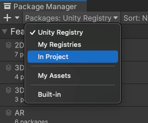

When you “remove” a package from your project, the Package Manager is actually removing the project’s direct dependency from your project manifest. The result of removing the direct dependency varies, based on the dependencies for the package you are removing:
If there are no other packages or feature sets that have a dependency on this package, any Editor or run-time functionality that it implemented is no longer available in your project. For more information about direct and indirect dependencies, see Dependency and resolution.
If another installed package or an installed feature set depends on the package you are trying to remove, this procedure removes only the dependency from your project manifest. The package itself and all its functionality is still installed in your project, and appears in the In Project list context with the dependency icon .
Before you begin
Make sure you understand these important notes before you begin:
If you use this procedure to remove a package that you installed from a registry, the operation removes the package from the current project. It doesn’t remove the same package that might exist in other projects. It also doesn’t remove the package from the global cache; this action isn’t supported by the Package Manager, and manually manipulating the global cache is discouraged.
If you use this procedure to remove a package that you embedded in your project, the Package Manager deletes the entire package folder from your computer. However, removing packages installed from any other source (including local packages) removes only the reference to the package in the manifest but leaves the package itself and its contents intact.
Procedure
要移除某个已安装的包，请执行以下操作：
打开 Package Manager 窗口，然后从 Packages 下拉菜单中选择 In Project。

Switch the context to In Project
Select the package you want to remove from the list of packages. The details view now displays that package’s information.
Click the Remove button. If this button is:
Not displayed, you might be viewing the My Assets list. See Before you begin.
You can only remove packages which are not required by another package or a feature set. The Package Manager enforces this by disabling the Remove button for all required packages.
If a feature set requires the package, it displays a lock icon () both in the list view and in the details view. The details view also displays the name of the feature set that requires the package below the package name in the details view.
However, even if you click the Unlock button, you still can’t remove the package from your project until you remove all feature sets which require it. Unlocking the package lets you request a different version for your project, but it still doesn’t let you remove it.
If one or more packages require the selected package, the Remove button is disabled. You can find the name of the package that has the dependency from the Dependencies tab in the details view. If you don’t need the other packages, you can remove them and the Package Manager automatically removes this package too.